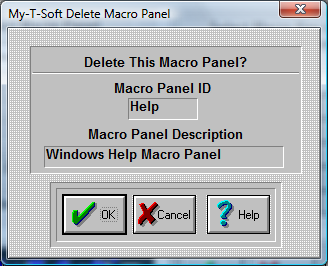

| My-T-Soft®: for Windows; Indestructible Keyboards and Indispensable Utilities; Version 1.80; User's Guide | ||
|---|---|---|
| Prev | Next | |

Delete this Macro Panel?
The Macro panel named in the box below Macro Panel ID will be deleted.
| Warning |
Use with extreme caution. Once the panel is deleted, it cannot be recovered! Press the OK Button to Delete the Selected Macro Panel. If you do not want to delete your panel, press the CANCEL button. |
Note: You cannot delete the Main Macro Panel.